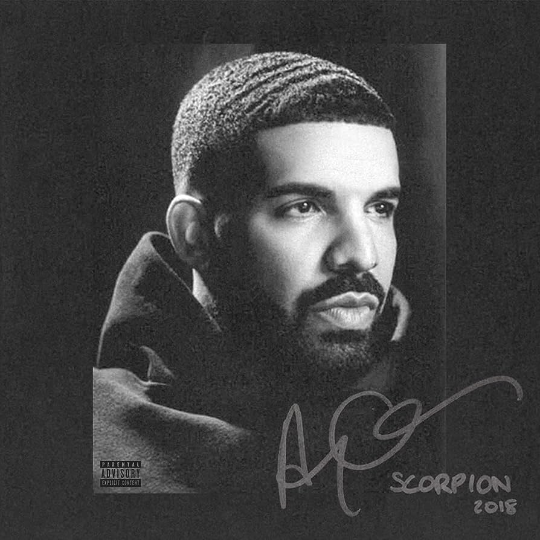

Hip-Hop

Drake
Reseña corta sobre su música: Drake es un influyente rapero y cantante de hip-hop conocido por su versatilidad en la música urbana. Sus letras exploran temas de amor, éxito y vida en la ciudad. Ha logrado numerosos éxitos en las listas de éxitos.
Género:Hip-Hop/R&B
Álbumes más populares: "Take Care," "Views," "Scorpion"
Banda: Solista
Eminem
Reseña corta sobre su música: Eminem es un influyente rapero y letrista conocido por su habilidad para contar historias, su lírica intensa y su estilo provocador. Ha abordado temas como la lucha personal, la fama y la vida en sus canciones.
Género: Hip-Hop
Álbumes más populares: "The Marshall Mathers LP," "The Slim Shady LP," "Recovery"
Banda: Solista
Duki
Reseña corta sobre su música: Duki es un destacado rapero y trapero argentino conocido por su estilo fresco y letras que exploran la vida en las calles y la cultura juvenil. Ha contribuido al auge del trap latinoamericano.
Género: Trap/Hip-Hop
Álbumes más populares: "Sin Culpa," "Super Sangre Joven," "Goteo"
Banda: Solista
Post Malone
Reseña corta sobre su música: Post Malone es un cantante y rapero estadounidense conocido por fusionar elementos de hip-hop, pop y rock en su música. Sus canciones a menudo exploran temas de fiesta, relaciones y éxito.
Género: Hip-Hop/Pop/Rock
Álbumes más populares: "Hollywood's Bleeding," "Beerbongs & Bentleys," "Stoney"
Banda: Solista